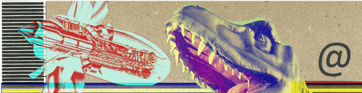

chatmail relay documentation¶

This documentation details how to setup, maintain and understand chatmail relays.
Contributions and feedback welcome through the https://github.com/chatmail/relay repository.
- Setting up a chatmail relay
- Minimal requirements and prerequisites
- Setup with
scripts/cmdeploy - Docker installation
- Other helpful commands
- Modifying the home page
- Refining the web pages
- Custom web pages
- Disable automatic address creation
- Configurable System Limits
- Running a relay with self-signed certificates
- Running a relay with externally managed certificates
- Migrating to a new build machine
- Setting up a reverse proxy
- Migrating to a new machine
- Technical overview
- Configuring reverse DNS
- Community developments
- Frequently asked questions
- Hosting without DNS records